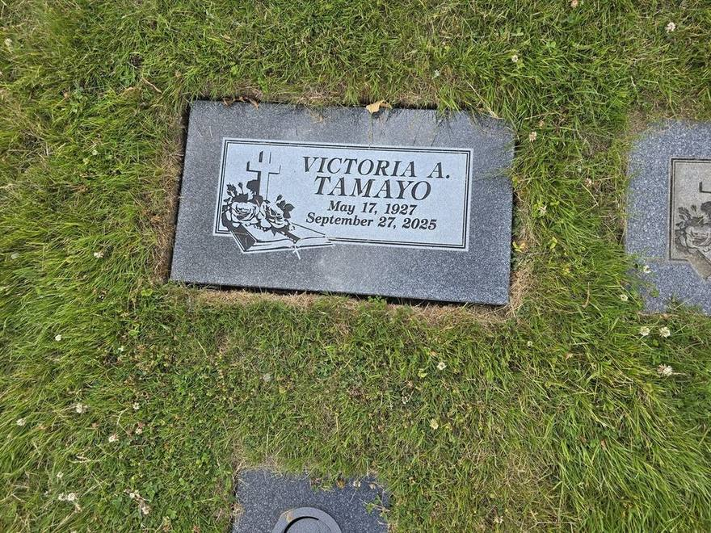
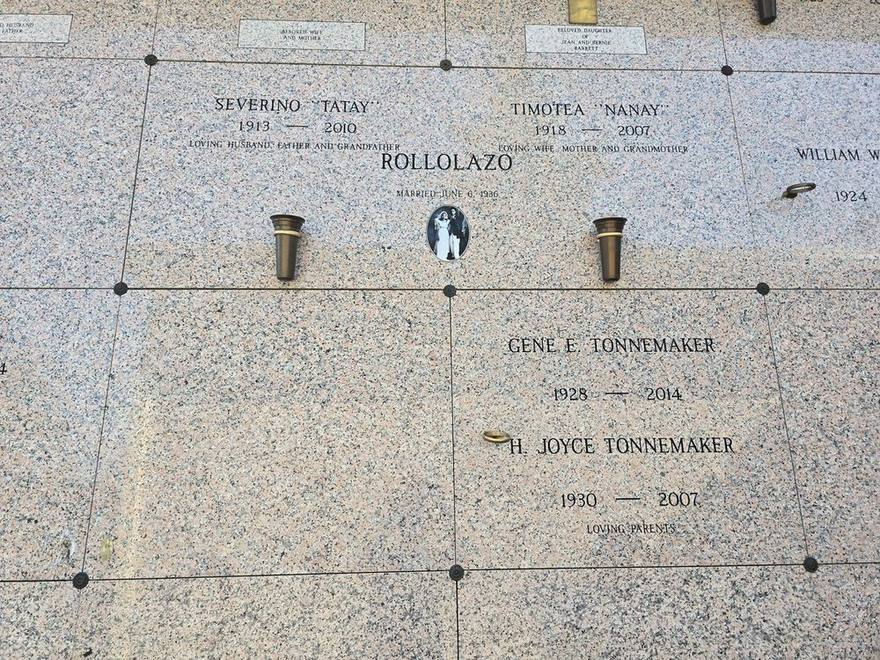
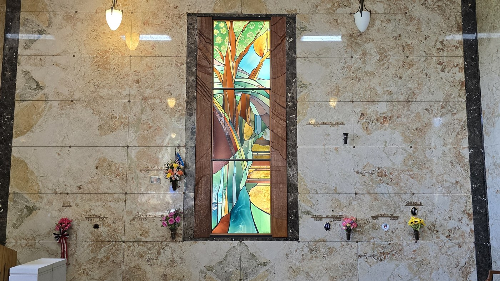
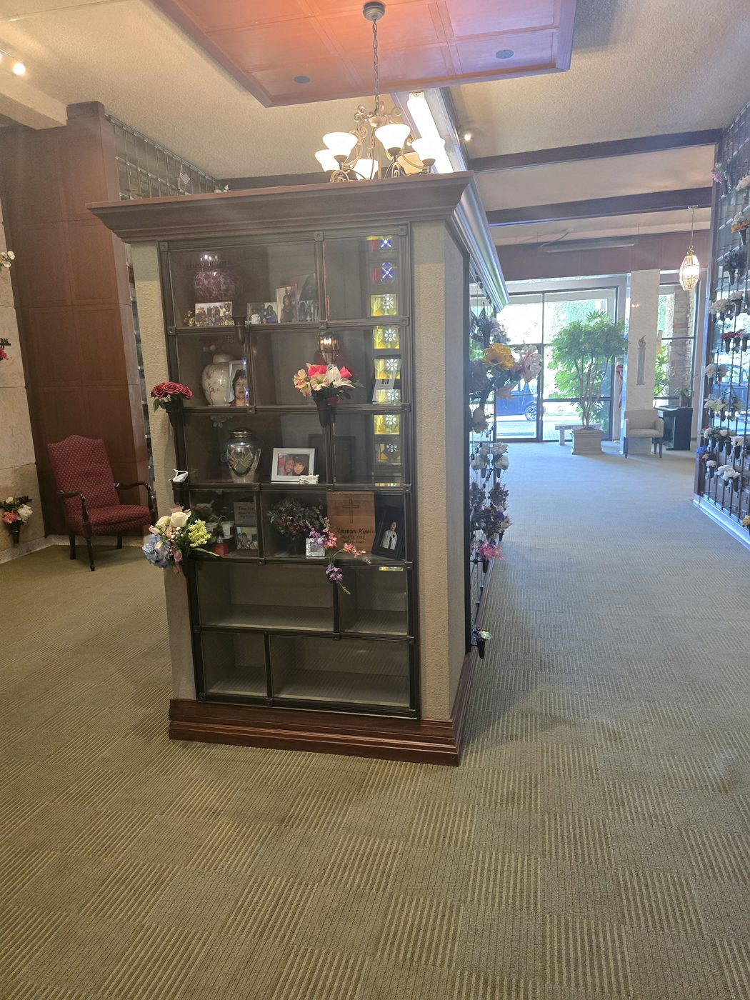
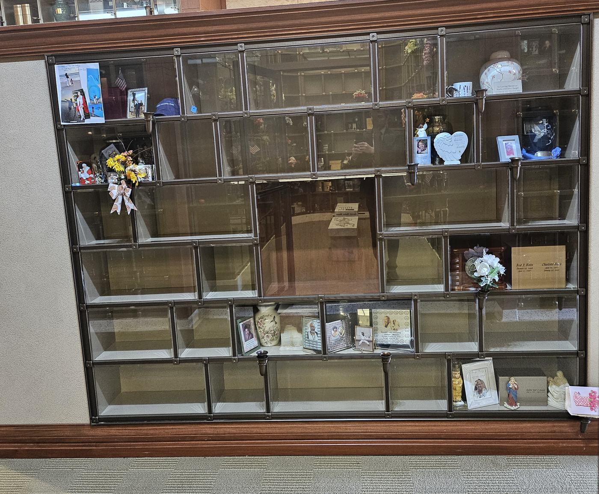
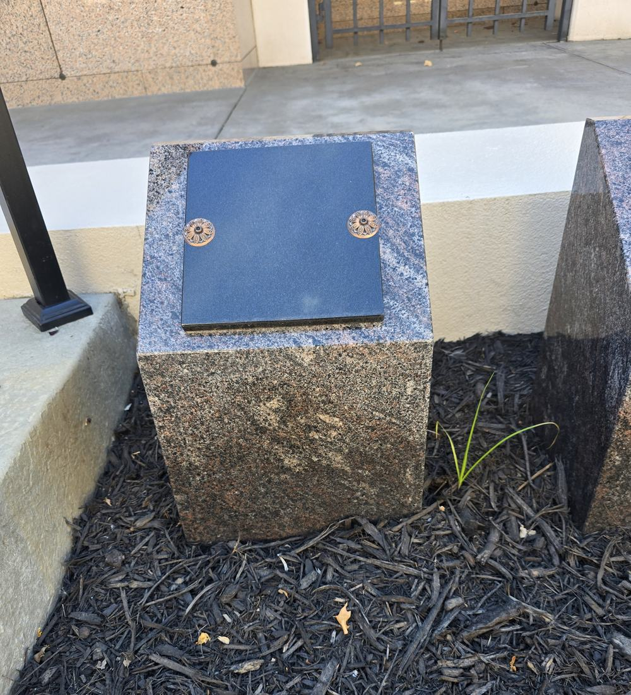
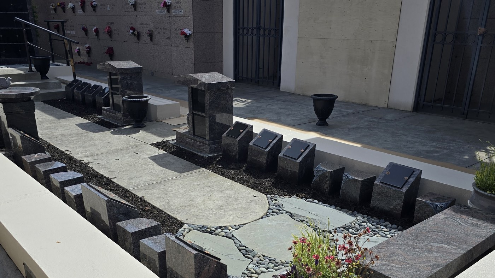

Cemetery Property Guide
What you
own here
Cemetery property is sold as the exclusive right to use a particular space as a resting place. The document you receive is a Certificate of Interment Rights, and the cemetery continues to own and care for the grounds. Your right does not expire, and it passes to your family if you never use it.
Section 1
What You Are Actually Buying
Interment rights, not real estate
When you buy cemetery property, you're not buying land. You're buying the exclusive right to use a particular space for human interment, and for no other purpose.
The document you receive says so directly. It's called a Certificate of Interment Rights, and it grants the exclusive use of a described space in Washington Memorial Park as a place of human interment. The cemetery continues to own and maintain the land itself. That is what allows the grounds to be cared for consistently, in perpetuity, rather than falling to whoever happens to hold the deed.
What that means in practice
Your right does not expire. It is not affected by moving away, and it passes to your family if you never use it.
Your right is subject to the cemetery’s rules, and those rules can change over time. Two things they can never do: impose a new charge or assessment on you, or prevent you from using your space for its purpose.
No transfer is valid without our written consent and a recording in our books. That is not a formality we impose. It is written into the certificate, and it is why any sale or transfer has to come through us.
Section 2The kinds of property here
The Kinds of Property Here
See what you would be buying, then what it costs
More than eighty acres, and more choices than most families expect. Which type suits you depends first on burial or cremation, and after that on setting, on cost, and on where your family already is.

Ground burial spaces
A lawn space in one of the numbered gardens, each with its own outlook. The traditional choice, and most of what you see when you drive in.A lawn space in one of the numbered gardens, each with its own outlook.


Mausoleum crypts
Entombment above ground rather than in the earth, in a building or a garden court. Chosen by families who would rather not be placed in the ground.Entombment above ground, indoors or in a garden court.


Columbarium niches
A compartment for urns in a wall or a room, closed by a granite faceplate or a glass front that keeps the urn in view. Six settings across the park, and every niche here holds two urns.A compartment for urns behind a granite faceplate or a glass front. Every niche here holds two.
See all six, with photographs →
Urn gardens
Ground burial for cremated remains in a garden built for it, marked the same way a lawn space is. One urn per space.


Cremation posts and benches
Granite posts, boulders and memorial benches along the new path, each holding cremated remains behind a bronze or granite cover.Granite posts, boulders and benches along the new path.
Two more things worth knowing
Lawn crypts. A pre-installed underground chamber in a designated section, so the ground does not have to be opened later. Available in limited areas. There is no photograph of one here yet. At the surface a lawn crypt looks like any other lawn space, so a picture of one would tell you nothing a picture of the garden does not.
Veterans sections. Two sections are set aside for those who served in the armed forces and in public safety, and the space itself is given at no charge to a qualifying veteran. See the Veterans Guide →
Scattering gardens. A permanent place for scattered remains, with a memorial so there is still somewhere to visit. Several settings, including an ossuary. See the Scattering Garden guide →
Where your family already is. If relatives are resting here, that is often the deciding factor. Tell us where they are and we will show you what is available nearby before you look anywhere else.
On each card the large figure is where most of what we have for sale sits, and the small line under it is the full span from the least expensive to the most. Both describe what is offered for sale today and move as spaces sell. Location, outlook and how much of a section remains all affect what a space costs, so the most useful thing you can do is walk the park with us and see them.
Section 3
What a Space Can Hold
How many people, and in what form
Families frequently assume a space holds a couple. Usually it does, but not in the way they expect, and the details are worth understanding before you decide how much property to purchase.
One casket burial per space
A ground space is sold for a single casket interment. A couple who both choose traditional burial will need two spaces.
A casket and an urn can share
Where one person chooses burial and the other cremation, both can rest in a single space. This is a common and considerably less expensive arrangement than two spaces.
Second and third rights
Cremated remains can be added to a space already holding an interment. Each additional placement is purchased as a right of interment, priced as a share of the space and of its endowment care.
Every placement carries its own charges
Adding someone to an existing space is not simply a matter of the right itself. Each interment has its own opening and closing, its own recording fee, and usually its own container. The same is true of a niche or a crypt holding more than one person. Section 4 covers all of it.
Section 4What else is on the quote
The Charges Beyond the SpaceThe space is one line. These are the others.
What each one is, and what it pays forNone are hidden, but families are rarely told about them until they are being asked to sign.
The space is one line on a quote. These are the others. None of them are hidden, but families are rarely told about them until the moment they are being asked to sign, which is the wrong time to learn something new.
- Endowment care fundA permanent fund whose earnings maintain the grounds. Required by Washington state on every sale of cemetery property. See Section 5A permanent fund whose earnings maintain the grounds. Required by Washington state on every sale.
- Opening and closingPreparing the space before the service and closing it afterward. The charge differs by type of interment, since a ground burial, an urn burial, a niche, and a mausoleum crypt each involve different workPreparing the space before the service and closing it afterward. Differs by type of interment.
- Recording feeEntering the interment permanently in the cemetery record, so that who is where remains known for as long as the park exists. Charged once per intermentEntering the interment permanently in the cemetery record. Charged once per interment.
- Outer burial container or vaultThe container that surrounds the casket or urn and supports the ground above it. Required for ground interment. Options range widelySurrounds the casket or urn and supports the ground above it. Required for ground interment.
- Vault settingPlacing the container in the space. Separate from the container itself, and different for a burial vault than for an urn vaultPlacing the container in the space. Separate from the container itself.
- Memorial and its installationThe marker or inscription, and the work of setting it. Granite markers here are priced all-inclusive. Bronze markers, including government markers for veterans, need a separate granite baseThe marker or inscription, and the work of setting it. Granite markers here are priced all-inclusive.
- Washington sales taxApplies to merchandise and its installation. The space, endowment care, opening and closing, and recording are exemptApplies to merchandise and installation. The space, endowment care, opening and closing, and recording are exempt.
- Timing surchargesFriday through Sunday, holidays, and interments after three in the afternoon each carry a surcharge.
Three of these have guides of their own, because the choices within them are substantial: burial vaults, granite markers, and urn placement.
Timing changes the cost
This one catches almost everybody. A service held on a Friday, Saturday, Sunday, or a holiday carries a surcharge, as does an interment scheduled after three in the afternoon. If the family wishes to witness the lowering or placement, that carries a charge as well, and the weekend rate is higher than the weekday one.
None of this makes a weekend service the wrong choice. Many families need one so that relatives can travel. But it should be a decision you make knowingly, not something you discover on an invoice, and if the day is flexible there is money in it.
Section 5
The Endowment Care Fund
The charge that pays for the next hundred years
Of every charge on a cemetery quote, this is the one families question most, and it deserves a proper answer rather than a line item.
The endowment care fund is a permanent fund established for the upkeep of the cemetery. Washington state requires a cemetery to deposit a minimum percentage of every property sale into it, and Bonney Watson’s contribution meets or exceeds that minimum: 15% of the price for ground property, and 10% for niches and crypts.
The principal is never spentEndowment care: the principal is never spent
Both state law and your Certificate of Interment Rights say the same thing: only the income from the fund may be used, and the principal remains permanently intact.
It is not an annual fee, a maintenance contract, or a charge that returns later. It is paid once, and its earnings pay to mow, water, prune, and repair these grounds for as long as this cemetery exists, long after everyone who signed for it is gone. That is the promise it makes, and it is why it cannot be waived.
This is the charge families question most. Washington state requires a portion of every property sale to be set aside in a permanent fund, and only the income may be used. Bonney Watson deposits 15% for ground property and 10% for niches and crypts. It is paid once, it is not an annual fee, and its earnings tend these grounds for as long as the park exists.
One consequence surprises people. Washington’s endowment care law ties the required deposit to the value of the property rather than to the price actually paid for it, so the contribution is still owed in full even when the property itself is discounted or given at no charge. A veteran receiving a space at no cost still contributes to the endowment care on it, figured on what the space is worth. It is not something we could waive even if we wished to, and we would rather explain that now than have you meet it on a contract.
Section 6
Owning It Over Time
Moving, transferring, selling, and giving it away
Most people buy cemetery property once and never think about it again. Some circumstances change, though, and it is better to know how this works before you need to.
If you move away
Nothing happens to your rights. They remain yours regardless of where you live, and a great many families who left the area years ago still return here. If you would prefer to be laid to rest closer to your new home, the options below apply.
If you transfer it to family
Interment rights can be transferred to another person. Both parties sign, the signatures are notarized, which we provide in our office at no charge or through DocuSign, and we record the transfer in our books. A deed transfer fee applies. If you are giving the property to a qualifying nonprofit organization, we waive that fee.
If you decide to sell it
You may sell your interment rights at any price you choose. We do not repurchase property or find buyers, so that part is yours to do, but we will show your space to anyone interested and prepare the transfer once you have agreed on a price.
Worth knowing before you buy
Sellers commonly ask around half of current value. Cemetery property is a right of use rather than an investment, and there is no ready market for it.
Which leads to the only advice here that costs us money: buy what you need. If more is wanted later and the section still has room, it can be added then.
Section 7
Why Prices Keep Rising
And why that argues for deciding sooner
Cemetery property does not follow ordinary inflation, and the reason is simple arithmetic. Land is finite, interment is permanent, and a cemetery cannot restock. Every space that is used is used for good.
Washington Memorial Park covers more than eighty acres and has been serving families here since the 1920s. In that time, some of our sections have closed to new sales entirely. They are full. Others are further along than families realize. That is not a sales argument, it is something you can see on a drive through the park, and we are glad to show you.
Our prices increase every year, and here in Washington they have risen faster than general inflation. Nothing about that is likely to reverse. There is no more land coming, and there are more people every year who need some of it.
What planning ahead actually buys you
The price. What you agree to today is what your family pays, whenever that day comes. On a purchase that may sit for thirty years, that is the largest single thing pre-planning does.
The space. Just as importantly, you choose it. You walk the park, you stand in the section, and you pick the one you want while it is still there to pick. Families arranging at need choose from whatever remains, in the same week they are burying someone.
The time. You can take months. You can come back three times. Nobody is waiting on you.
Section 8Two things families ask
Common Questions
What families ask us most about cemetery property
Do I own the land?
No. You own the exclusive right to use that space for human interment, and for no other purpose. The cemetery owns and maintains the land itself. That arrangement is what keeps the grounds cared for consistently over generations.
Can two people be buried in one space?
A space is sold for one casket interment. A casket and an urn can share a space, so a couple where one chooses cremation can rest together in a single space. Cremated remains can also be added to a space later as a second or third right of interment.A space is sold for one casket interment. A casket and an urn can share a space, so a couple where one chooses cremation can rest together. Cremated remains can also be added later as a second or third right of interment.
Two caskets in one space is possible in some sections, but it is the exception rather than the rule. It depends on the section and a few other factors, so ask me about the specific space and I will find out for you.Two caskets in one space is possible in some sections, but it is the exception rather than the rule. It depends on the space, so ask me and I will find out for you.
Does my property expire if I never use it?
No. Interment rights do not expire and there is nothing further to pay to keep them. If you never use the space, it passes to your family.
What happens if I move out of state?
Your rights stay yours no matter where you live. Many families who moved decades ago still return here. If you would rather be closer to where you are now, you can transfer or sell the property, and we will handle the paperwork either way.
Can I sell my cemetery property?
Yes, though finding the buyer is yours to do. We do not repurchase property or locate buyers, but we will show your space and prepare the transfer once you agree on a price. Every transfer requires our written consent and recording, so it does come through us. Sellers commonly ask around half of current value.
Why is there an endowment care charge if I am buying the space outright?
Because the space still has to be cared for, permanently. Washington state requires a portion of every property sale to be set aside in a fund whose earnings maintain the grounds. The principal is never spent. It is a one-time charge, and it is what ensures this park is still being mowed and tended a century from now.
Can I choose any kind of marker I want?
Nearly every section here requires a flush marker set level with the lawn, which is what gives the park its open character. Upright monuments are permitted in only a few designated areas. Within those rules there is a great deal of choice in stone, colour, design, and lettering.
I already own property here. Can I change my mind about where I want to be?
Often, yes. Existing property can usually be applied toward a different section. Bring your deed and we will look at what makes sense.
Come and walk it with us
Reading about sections is not the same as standing in one. There is no cost to look, no obligation, and no reason you cannot take months to decide afterward.
Schedule a visit Browse all guidesOr reach Martice Morrison directly at 206-277-5417 or mmorrison@bonneywatson.com
Come and walk it with us
Reading about sections is not the same as standing in one. There is no cost to look and no obligation. I would rather give you a real number than a guess, so call or email and I will put an exact quote in writing.
Martice Morrison · (206) 445-9794 · mmorrison@bonneywatson.com